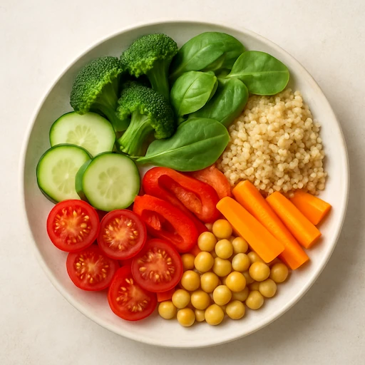
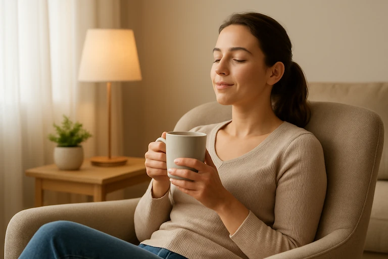

Voeding is de basis
Gezonde voeding levert energie, ondersteunt je immuunsysteem en zorgt voor een goed humeur.
- Eet gevarieerd en kleurrijk
- Beperk toegevoegde suikers
- Drink minstens 1,5 liter water per dag

Blijf in beweging
Regelmatige lichaamsbeweging verlaagt stress, versterkt spieren en verbetert je concentratie.
Beweegtips van de week
Wissel eens de lift in voor de trap, of parkeer wat verder om extra stappen te zetten.


Ontspan
Neem regelmatig tijd voor jezelf. Een korte pauze vermindert stress.

Slaap goed
Een goede nachtrust bevordert herstel en mentale veerkracht.
Ga naar buiten
Frisse lucht en natuur verbeteren je stemming en energiepeil.
Dagelijkse gewoontes
| Gewoonte | Voordeel | Aanbevolen frequentie |
|---|---|---|
| 8 glazen water drinken | Hydratatie en energie | Dagelijks |
| 30 minuten wandelen | Betere conditie | Minstens 5x/week |
| Voldoende slaap | Mentale focus | Elke nacht |